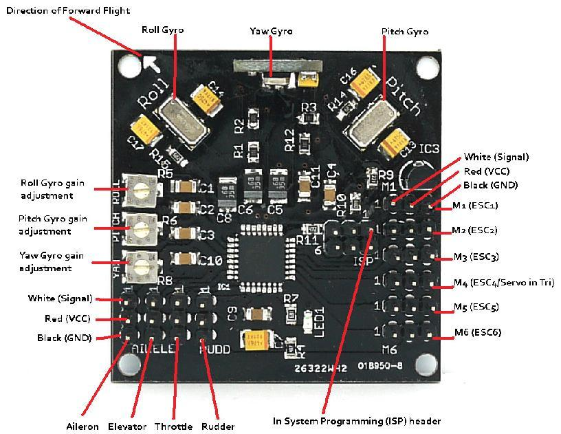
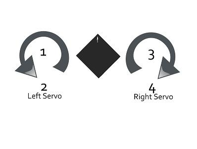
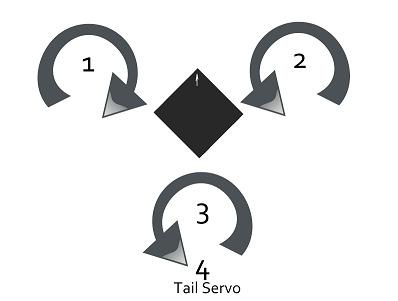
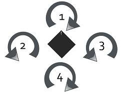
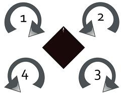
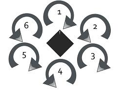
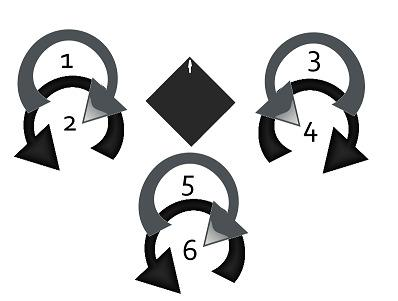

The KKmulticontroller is a flight control board for remote control multicopters with 2,3,4 and 6 rotors. Its purpose is to stablise the aircraft during flight. To do this it takes the signal from the three gyros on the board (roll, pitch and yaw) and feeds the information into the Integrated Circuit (Atmega IC). This then processes the information according the the KK software and sends out a control signal to the Electronic Speed Controllers (ESCs) which are plugged onto the board and also connected to the motors. Depending upon the signal from the IC the ESCs will either speed up or slow down the motors (and tilt the rear rotor with a servo in a Tricopter) in order to establish level flight.
The board also takes a control signal from the Remote Control Receiver (RX) and feeds this into the IC via the aileron, elevator, throttle and rudder pins on the board. After processing this information, the IC will then send out a signal to the motors (Via the M1 to M6 pins on the board) to speed up or slow down to achieve controlled flight (up, down, backwards, forwards, left, right, yaw) on the command from the RC Pilot sent via his Transmitter (TX). In the case of a Tricopter, one of the pin connectors (M4) will control a servo to achieve yaw authority.
The v.5.5 has an Atmega168 chip on board and an ISP header which gives users the option to tweak and upload their own controller code.
Model: AVR101D2P
http://www.seeedstudio.com/depot/images/product/kk01.jpg
NOTES: Do not use bigger propellers than you need. Light propellers gives faster response and more stability.Try to get it to hover at about midstick (1/3 to 2/3 throttle). Use smaller/bigger propeller, different motor Kv or more/less Battery cells to achieve that.
Click here to see the Schematic Diagram of KKmulticontroller:
May include key specification and other specifications.
1.Checking transmitter channels:
channel.
channel.
(rudder) channel.
2. Transmitter throttle adjustiment:
stick down and to the right for the LED to come on. If this does not happen, adjust your throttle and yaw trim down and to the right on your transmitter. Make sure you do not have any mixing switches on your Transmitter enabled.
3. Initial transmitter ATV/servo range settings:
4. ESC throttle range:
5. Initial Gyro gain pot value is 50%.
Increase until it starts to oscillate rapidly, then back off until it is stable again. Fast forward flight needs lower gain. Too low gain is recognized by the multicopter being hard to control and/or always wanting to tip over.
6. Checking gyro directions:
7. Reversing gyros:
8.Final check:
Hold the multicopter firmly over our head and slowly advance to about 1/2 throttle. Hold it steady when you start increasing the throttle, becouse the multicontroller calibrates its gyros when throttle leaves zero, and then the gyros need to be at rest. If the multicopter tries to twist away, check propeller and motor directions, gyro placement and trim settings. A slight twist is OK.
If not, try to twist the quad. It should resist your movements. More gyro gain gives more resistance. If it starts to oscillate, reduce the gain. You should not need to reduce the gain below 40%.
Note: the correct procedure for taking off from the ground is as following:
The v.5.5 KKmutlicontroller uses Murata piezo gyros that are less sensitive to vibration than SMD type gyros, but it is still a good idea to mount the board on a vibration dampening material. The board must also be mounted with the white arrow facing the direction of forward flight.
When connecting your Remote Control Receiver (RX) you must connect the white signal wire of the channels (CH1, CH2, CH3 and CH4) from your RX corresponding to the aileron, elevator, throttle and rudder to the inner pins on the board while the red (VCC) wires are connected to the center pins, and the black (GND) wires are connected to the pins on the outer edge of your board.

The pins marked M1 to M6 are connected to the 3 pin BEC plug from your ESCs. They follow the same convention as the RX pins with the white wires connected to the inner pins, the red wires to the center pins and the black wires to the outer pins. The ESCs and the connected motors are plugged onto the pins M1 to M6 in the following order depending on flight rotor configuration.
Note also the direction of rotation for each motor. This is achieved by connecting the three ESC wires to the motors and swapping two of the wires to achieve rotation in the opposite direction.
|  |  |
| KKOsprey (Power Tower) | KKTricopter |
|  |  |
| KKQuadrocopter (+ Configuration) | KKXcopter (x Configuration) |
|  |  |
| KKSexycopter (Hex) | KKY6copter (Hex Y Configuration) |
Includes important code snippet. Demo code like :
Demo code { }
The KKmulticontroller can be used in several different flight configurations depending upon which firmware is loaded onto the chip. These configurations are:
The v.5.5 Blackboard has an Atmega168 chip on board which allows users to tweak and load non standard firmware.
Set IC Fuses & Flash Flashing the Firmware
Connect the AVRISP Mk2 (or similar) Programmer to the six pin ISP header on the Kkmulticontroller board.
Connect your Programmer's 6 pin socket to the ISP header on the board. Pin 1 on the ISP header is usually marked with a small triangle. Then connect the a 5V DC power source to the PCB pins.
All the components used to produce the product.
Here is the MicroControllers FAQ, people can go here to find questions and answers for this kind of products.
If you have questions or other better design ideas, you can go to our forum or wish to discuss.
| Revision | Descriptions | Release |
|---|---|---|
| v5.5 | Revise version | Jan 3, 2011 |
Bug Tracker is the place you can publish any bugs you think you might have found during use. Please write down what you have to say, your answers will help us improve our products.
The Additional Idea is the place to write your project ideas about this product, or other usages you've found. Or you can write them on Projects page.
Click here to buy:http://www.seeedstudio.com/depot/kkmulticontroller-smd-v55-blackboard-p-739.html?cPath=132_136.
Other related products and resources.
This documentation is licensed under the Creative Commons Attribution-Noncommercial-Share Alike License 3.0.Source code and libraries are licensed under GPL/LGPL, see source code files for details.
Links to external webpages which provide more application ideas, documents/datasheet or software libraries
Copyright (c) 2008-2016 Seeed Development Limited (www.seeedstudio.com / www.seeed.cc){kind=link}
{kind=link}
{kind=link}